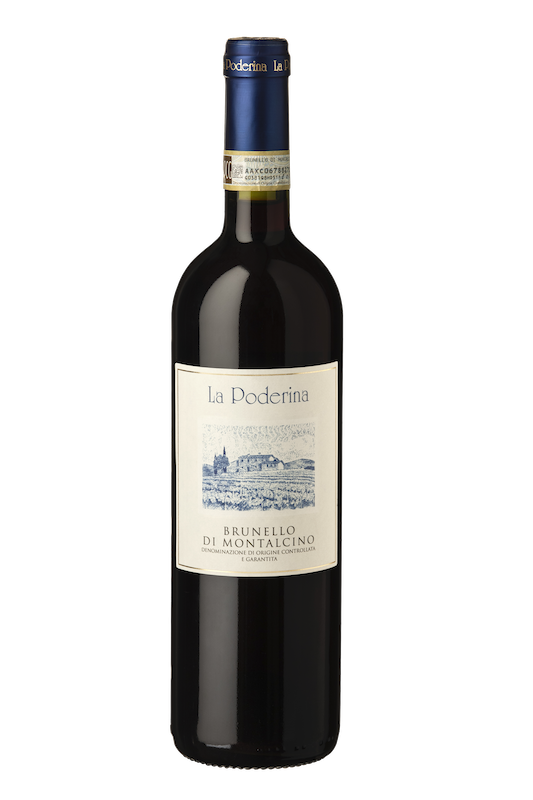

Nato nel cuore della Toscana e reso celebre dalla
storica cantina Biondi Santi, il Brunello di
Montalcino è un rosso di carattere, prodotto
esclusivamente da uve Sangiovese Grosso.
Si distingue per profumi intensi di ciliegia matura,
spezie dolci e tabacco, con lievi sentori terrosi che
evolvono con l’invecchiamento.
Al palato è strutturato, profondo e avvolgente, con
tannini eleganti e un finale lungo. Questo vino è
l’emblema della tradizione toscana: nasce da
un’accurata selezione delle uve e da un affinamento
paziente in grandi botti di rovere, che gli
conferiscono equilibrio e longevità.
